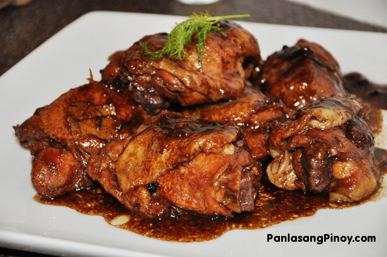

The Adobo Recipe

Adobo or adobar is the immersion of cooked food in a stock composed variously of paprika, oregano, salt, garlic, and vinegar to preserve and enhance its flavor. The Portuguese variant is known as Carne de vinha d'alhos.
Ingredients:
- Meat (beef, chicken, pork)
- Seafood
- Vegetables
- Soysauce
- Vinegar
- Cooking oil
- Garlic
- Black peppercorn
- Bayleaf
Instructions:
- Combine the pork belly, soy sauce, and garlic then marinade for at least 1 hour
- Heat the pot and put-in the marinated pork belly then cook for a few minutes
- Pour remaining marinade including garlic.
- Add water, whole pepper corn, and dried bay leaves then bring to a boil. Simmer for 40 minutes to 1 hour
- Put-in the vinegar and simmer for 12 to 15 minutes
- Add salt to taste
- hot. Share and enjoy!